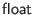

We give the Ur language definition in LATEX math mode, since that is prettier than monospaced ASCII. The corresponding ASCII syntax can be read off directly. Here is the key for mapping math symbols to ASCII character sequences.
math mode, since that is prettier than monospaced ASCII. The corresponding ASCII syntax can be read off directly. Here is the key for mapping math symbols to ASCII character sequences.
| LATEX | ASCII |
|---|---|
| -> | |
| -> | |
| * | |
| fn | |
|
|
=> |
| ==> | |
| <> | |
| <= | |
| >= | |
| Normal textual identifier, not beginning with an uppercase letter | |
| Normal textual identifier, beginning with an uppercase letter |
We often write syntax like
to indicate zero or more copies of  ,
to indicate one or more copies, and
and
to indicate multiple copies separated by commas. Another separator may be used in place of a comma. The
,
to indicate one or more copies, and
and
to indicate multiple copies separated by commas. Another separator may be used in place of a comma. The  term may be surrounded by parentheses to indicate grouping; those parentheses should not be included in the actual ASCII.
term may be surrounded by parentheses to indicate grouping; those parentheses should not be included in the actual ASCII.
We write for literals of the primitive types, for the most part following C conventions. There are ,  , , and literals. Character literals follow the SML convention instead of the C convention, written like #"a" instead of 'a'.
This version of the manual doesn't include operator precedences; see src/urweb.grm for that.
As in the ML language family, the syntax (* ... *) is used for (nestable) comments. Within XML literals, Ur/Web also supports the usual <!- ... -> XML comments.